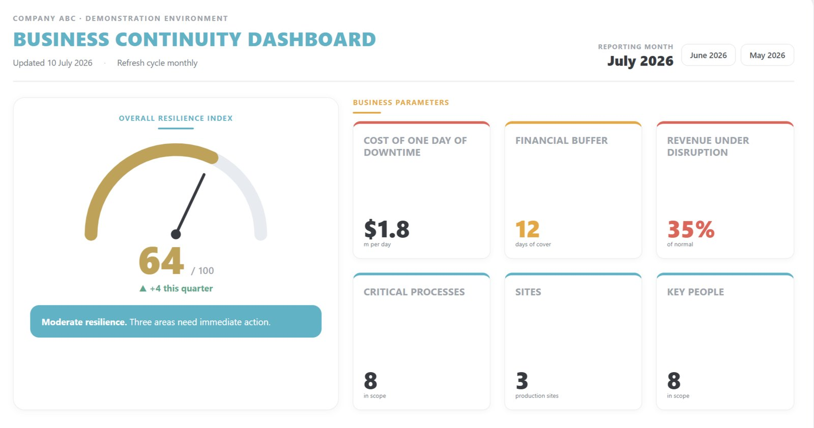

Continuity and risk dashboard · first screen in 2 weeks · inside your perimeter
The resilience index, critical processes, single points of failure and the cost of one day of downtime, on one screen for the CEO, the board and audit. First dashboard in two weeks. Data never leaves your company.
For the CEO, the board, the risk manager and audit. Five questions they ask, and what the dashboard shows.
Risks change week by week, and an annual report shows last year’s picture. A dashboard is especially timely before a tender or a regulator review, after an incident or when the insurer starts asking questions.
Three steps, about two weeks. No IT project is needed to start.
When you are ready, we connect your systems directly (the Integration level) and the numbers update without manual input.
A live example built on the data of a fictional company, ABC. Click to open the demo.

A light setup: the dashboard is a single HTML file built by a small engine. The engine runs entirely inside your perimeter, on the coordinator’s laptop, a corporate server or your private cloud.
The dashboard shows the most sensitive numbers of the company. So it runs where your data already lives.
The price depends on the number of critical processes on the screen, the data sources we connect and the deployment inside your perimeter. We send a quote within two working days.
After the Resilience audit and improvement programme the metrics are already collected and go straight onto the dashboard.
Levels
Good to know
No. Everything runs on your side, so not a single number goes outside.
With the Excel workbook: the methodology inside tells you what to collect. If there is no baseline data at all, we gather it together in the Resilience audit and improvement programme.
Your coordinator, 1–2 hours a month following the guidance. Or subscribe to the monthly service and we handle it.
Usually two weeks from the start: setup, form filling, the first build and a results review.
The continuity metrics are already selected, defined and linked, so the coordinator fills the form from day one. The start needs no integrations, servers or procurement, every rebuild keeps a dated snapshot for trends, and scheduled updates keep the continuity system alive after the project.
Three steps to the start. We meet on Zoom and write by email.
Leave your contacts. We reply within one working day and arrange a call or a Zoom meeting. If needed, we sign an NDA before the conversation.